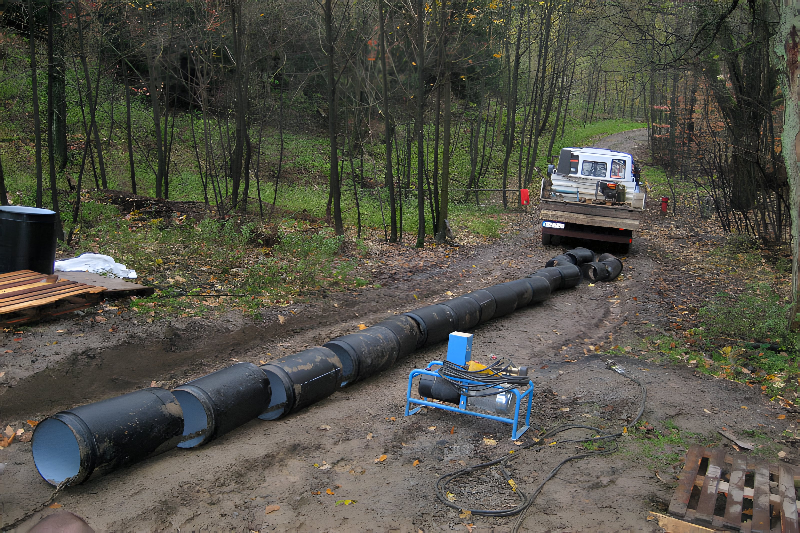

Kanalsanierung DN 100–800.
Verfahrenstechniken zur Sanierung beschädigter Rohrleitungen – wir stellen die Funktion Ihres Kanals wieder her, ohne ihn vollständig zu erneuern.
Unter dem Begriff Kanalsanierung versteht man Verfahrenstechniken zur Sanierung von Rohrleitungen.
Kanalsanierung umfasst alle Maßnahmen, die den Sollzustand schadhafter Kanäle wiederherstellen, ohne sie zu erneuern: Der vorhandene Kanal bleibt erhalten und wird von innen mit neuen Materialien ausgekleidet.
Aus dem breiten Verfahrensspektrum haben wir uns auf einzelne Techniken spezialisiert und darin unser Know-how sowie über 50 Jahre Erfahrung im Kanalbau eingebracht.

Roboterreparatur
Robotergesteuerte Reparatur für undichte Muffen und Wurzeleinwuchs, DN 150–700.
Verfahren ansehen
Kurzliner
Kunstharzgetränkte Glasfasermatte für punktuelle Schäden, DN 100–700.
Verfahren ansehen
Seitenzulaufeinbindung
Fachgerechte Einbindung seitlicher Zuläufe mit Hutprofil-, Hächler- oder Sidliner-Technik.
Verfahren ansehen
Renovierung (Inliner)
Renovierung mittels Inlinerverfahren, DN 100–300–800.
Verfahren ansehen
Erneuerung (geschlossen)
Kurzrohr- oder TIP-Verfahren für stark deformierte Abschnitte, DN 150–800.
Verfahren ansehen
Erneuerung (offen)
Erneuerung in offener Bauweise, haltungsweise oder punktuell – eine Kernkompetenz seit 1964.
Verfahren ansehen